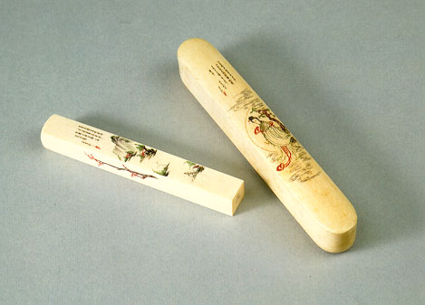

義助慰安婦 —— 李敖百件珍藏義賣藝術品（第39件） 品 名：C8. 極品毫芒牙印 預估價：30 萬 成交價：（保留） 說 明： 毫芒雕刻為中國美術工藝品之一，可在象牙、骨頭、核桃等之上雕刻一些人和字，如〈核舟記〉即是在核桃上雕了一條船。此種雕刻需要很好的眼力及刀鋒，目前這件作品為毫芒象牙彫刻，展示時需用放大鏡方能觀看，其上雕有仙女，牙印部份則為山水，置牙印的盒子為整塊象牙所製，是此中極品。 
毫芒雕刻為中國美術工藝品之一，可在象牙、骨頭、核桃等之上雕刻一些人和字，如〈核舟記〉即是在核桃上雕了一條船。此種雕刻需要很好的眼力及刀鋒，目前這件作品為毫芒象牙彫刻，展示時需用放大鏡方能觀看，其上雕有仙女，牙印部份則為山水，置牙印的盒子為整塊象牙所製，是此中極品。